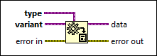

Variant To Data Function
Owning Palette: Variant VIs and Functions
Requires: Base Development System
Converts variant data to a LabVIEW data type so LabVIEW can display or process the data. You also can use this function to convert variant data to ActiveX data.

 Add to the block diagram Add to the block diagram |
 Find on the palette Find on the palette |